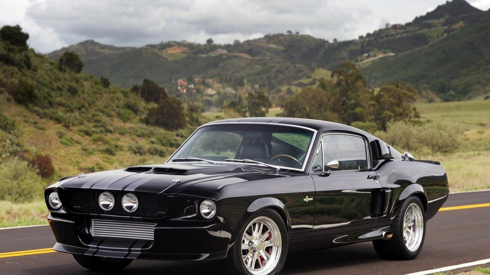
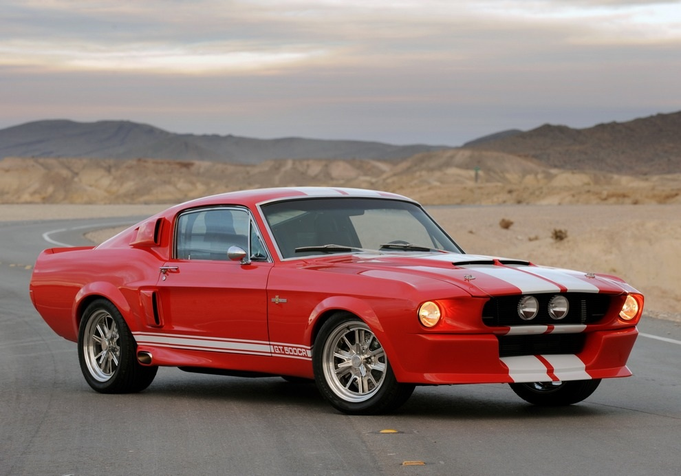
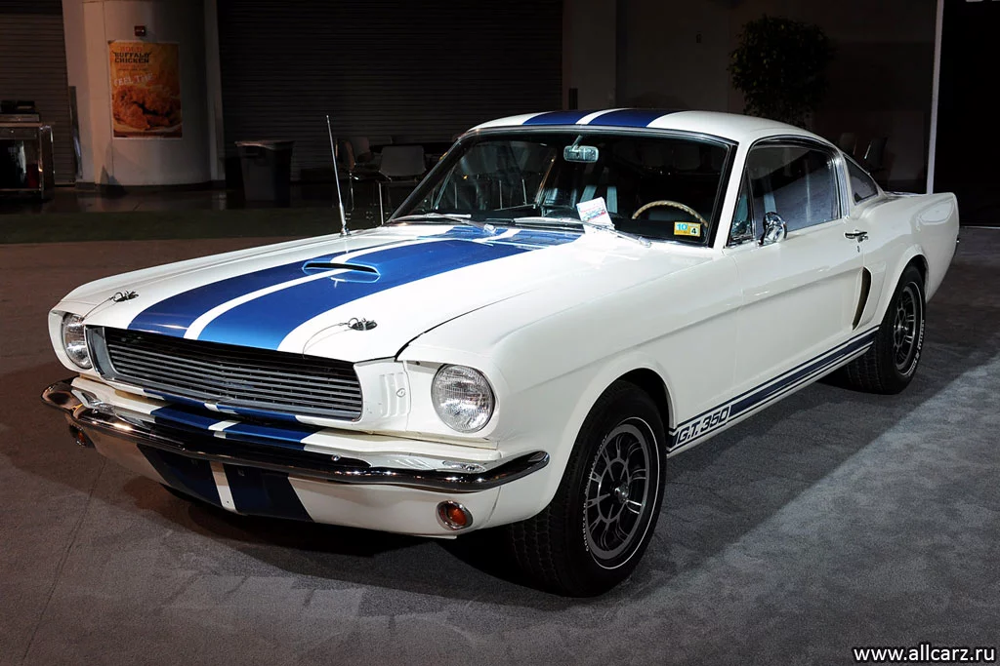

FORD MUSTANG GT 500
Существуют популярные автомобили. Существуют «модные тачки». А есть машины, которые самим фактом своего существования олицетворяют целую эпоху. Двадцатый век стал временем огромного технического прогресса, и как, например, серьёзно повлияло на мир открытие ядерной энергии, так сильно, пожалуй, повлияло создание Мустанг Шелби GT 500 на все автостроение в целом.
После второй Мировой войны конкуренция на американском рынке автомобилестроения резко возросла, Chevrolet и Ford бодались не на жизнь, а не смерть. Chevrolet был немного впереди и тогда компания Ford всерьез задумалась о выпуске автомобиля, благодаря которому все перевернется, Ford займет лидирующие позиции. Время требовало подобающий автомобиль, но какой именно… Одни предлагали маленький спортивный автомобильчик, другие собирались сделать спортивного монстра.
в 1964 году спрос в пять раз превысил прогноз. За два года «Мустанг» принес $1,1 млрд чистой прибыли. И это в долларах 1964 года! Журнал Детройта «Consumer reports» признал, что «Мустанг», «построенный в такие бешеные сроки, пока почти лишен производственных дефектов». Американцы смели «Мустанги», а также брелки и бейсболки с их изображением, сделав из машины культ. Помесь дикой кошки, коня и итальянки преодолела океан. В 1966 году в Европе вышел фильм, в котором 30% экранного времени занимал Ford Mustang.

Больше информации.